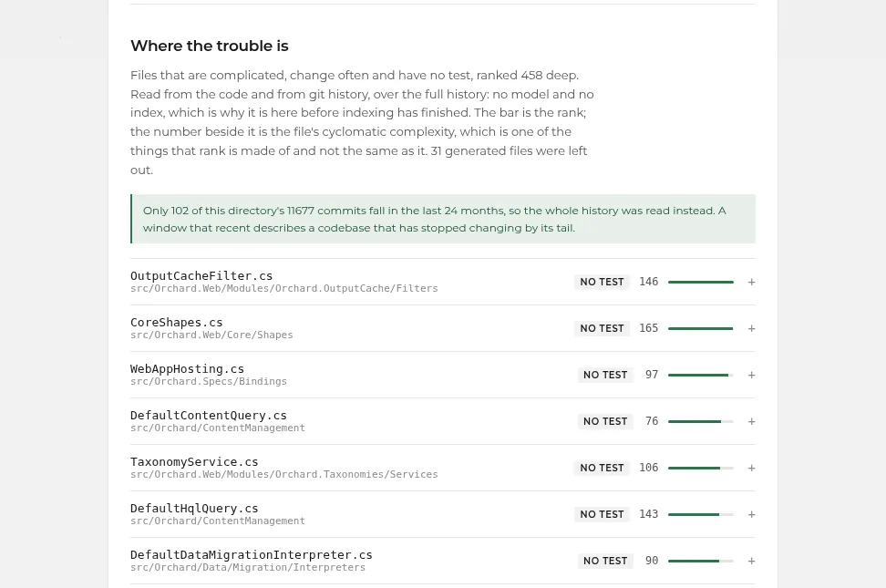
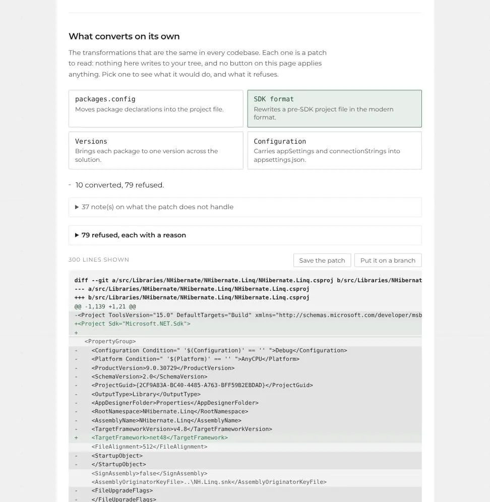

Know what your .NET Framework application is made of before anyone touches it.
Legacy Lens reads the whole solution on your own machine and hands back a measured report: what is there, what will hurt, what blocks a move to modern .NET, and in what order to deal with it.
The problem
An application nobody dares to touch.
It runs on .NET Framework. It runs the business. The people who wrote it have left. Nobody can say what a move to modern .NET would take, or where to start, without weeks of reading.
So it stays where it is, and every year it costs a little more to keep.
What it delivers
A document, not a dashboard.
- The mapProjects, dependencies, sizes, target frameworks, and which projects no test references.
- The files at riskRanked on structure and change frequency together, with the reasons beside each one.
- What blocks the movePackages with no future, APIs that are gone, and how much of each the code actually uses.
- The order of workWhat blocks everything else, what a tool does on its own, what needs a decision. A dependency order, not a schedule.
- A safety netCharacterization tests that record what the code does today, compiled and run before anyone sees them.
- Mechanical conversionspackages.config, SDK project format, package versions, configuration: each one a diff that nobody has applied.

Why trust it
Nothing in it is generated.
- Nothing leaves your machine.The analysis runs on your workstation or your server. No source code is sent to any third-party service.
- Every number is measured.From the project files, the source text and the git history. No language model writes the report: every sentence is a template filled with a measured number.
- What was not seen is written down.The report ends with what it could not measure: that nothing was compiled, that test coverage is a naming convention, how many packages are unclassified.
- Nothing is applied without a person.Conversions come out as patches. A person reads them and decides. The tool never pushes, and never writes to your working tree.
Proof on real code
Measured on two public codebases.
Orchard CMS and nopCommerce 3.90, both ASP.NET MVC on .NET Framework. Neither is ours, and neither is committed to the repository.
- 414,611lines of Orchard CMS, 89 projects, assessed in about ten seconds, without compiling anything.
- 0 errorsafter conversion: Orchard (88 projects) and nopCommerce 3.90 (31) build, checked on a hosted Windows runner.
- ~400 / 128characterization tests kept on Orchard and on nopCommerce, each one compiled and passing.
- 900+automated tests in the tool itself. The code is public.
Not proven yet: the converted applications have been built, not run. Whether they start and serve a page is a separate measurement.

Sample report
The full report on Orchard CMS.
Generated by the tool, unedited. It opens with the paragraph for a reader who will read one paragraph:
orchard is 89 projects and 414,611 lines across 6,203 source files. Everything targets v4.8. No test project references 45 of the 78 projects that ship code, covering 75,908 lines.
Who does it
Selim Selimi.
Senior .NET engineer in Geneva. Contributor to ILSpy, the .NET decompiler, and to REA. Legacy Lens is his work and its code is public.
Contact
A 20-minute call, no commitment.
We look at your situation together and see whether an assessment makes sense for you.
selimi1203@gmail.com